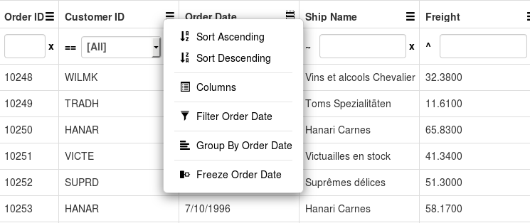
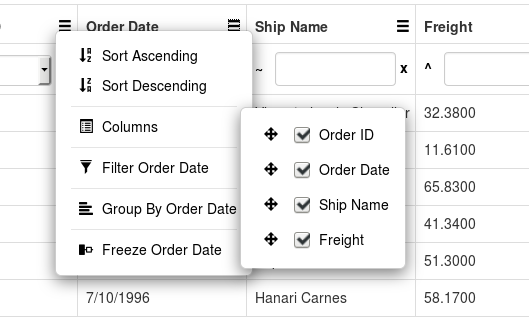
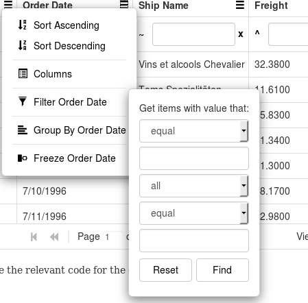

Column Menu¶
When you interact with grid columns, you may want to be able to trigger column operations via a dedicated menu for this purpose.
The Guriddo jqGrid has built-in support for such a feature, which can be enabled via a single configuration setting, i.e. colMenu=true in grid options. Thus an option to display a column menu will be rendered in the grid column headers, which when activated allows you to sort, filter, freeze, group or change the visibility of the column.
Furthermore, this menu takes into account whether a certain column operation is disabled via the column definition, and excludes the corresponding UI from its rendering.
When activeted the UI can look like this:

Setup¶
To setup the column menu it is needed to set to true the colMenu grid option.
$("#grid_id").jqGrid({ ... colMenu : true, ... });
When this is set we have a grid like the picture above.
The column menu uses the following properties from language file:
$.jgrid.regional["en"] = { ... colmenu : { sortasc : "Sort Ascending", sortdesc : "Sort Descending", columns : "Columns", filter : "Filter", grouping : "Group By", ungrouping : "Ungroup", searchTitle : "Get items with value that:", freeze : "Freeze", unfreeze : "Unfreeze", reorder : "Move to reorder" } };
These properties correspond to the menu names when the user activates it. The text in the menu can not be changed dynamically. To change the text you can either change the language file or set a property before calling the grid setup. By example to change the 'Filter' text to 'Search' you can (in case a English language is used):
$.jgrid.regional["en"].colmenu.filter = "Search"; $("#jqgrid_id").jqGrid({...});
It is possible to control the appearance of the menu of every column. This is done with the help of the following colModel options:
- boolean colmenu - when set to false the column menu is not enabled for that column
- object coloptions - object setting which action of the menu is enabled for that columns. The object have the following properties
- sorting boolean - enables/disable sorting actions - default true
- columns boolean - enables/disables columns reorder and moving action - default true
- filtering boolean - enables disables filtering action - default true
- grouping boolean - enables disables grouping action - default true
- freeze boolean - enables disables freeze action - default true
The example below disables the column menu for OrderID column and the filter action for OrderDate column.
$("#grid_id").jqGrid({ ... colMenu : true, colModel : [ {name: 'OrderID', ..., colmenu: false,...}, {name: 'CustomerID',...}, {name: 'OrderDate',..., coloptions: { filtering: false},...} ... ], ... });
Currently it is not possible to disable dynamically column menu globally and appearance of certain menu and items in it when they already set.
Actions¶
Sorting¶
The appearance of sorting action is controlled with sortiong property in coloptions object in colModel. When this option is enabled two actions appear - one for sorting Ascending and one for sorting Descending. When clicked the grid sorts on selected direction and the menu is closed.
When this option is set to false both actions does not appear for that column.
Columns¶
The appeariance of columns action is controlled with columns property in coloptions object in colModel. When this action is enabled, when hover with the mouse over the column item additional menu appear like in the menu below:

This menu contain of three columns - the first one has indicator for moving, the second one has a checkbox for show/hide the column and the third one is the label of the column.
To move the column to a certain position click with the mouse on the mark indicator of the desired column, hold the button and move the column to new position and release the mouse button. Moving is enabled only vertically.
To show/hide a column click on the checkbox of the desired column. If the state is checked the column is shown and if unchecked the column is hidden immediately.
Hidden columns does not appear in the list.
It is possible to control which columns can be show/hide using the colModel option hidedlg. If this option is set to true the columns does not appear in the list for moving and showing.
To disable appearance of OrderDate coulmn in column list (using the above example) do:
$("#grid_id").jqGrid({ ... colMenu : true, colModel : [ {name: 'OrderID', ..., colmenu: false,...}, {name: 'CustomerID',...}, {name: 'OrderDate',..., hidedlg: true, coloptions: { filtering: false},...} ... ], ... });
A event colMenuColumnDone can be executed (if defined) after the columns are reordered or the check-box is selected.
The service columns for multiselect, row numbers and subgrid does not appear in this list
Filtering¶
The appearance of filtering action is controlled with filtering property in coloptions object in colModel. When this action is enabled, when hover with the mouse over the column item additional menu appear like in the menu below:

With this action is possible to search on the column using two possible values. It is possible to use only one value for searching. To change the search operations use searchoptions sopt array. If the search operations are not changes, we use the following default operations
['eq', 'ne', 'bw', 'bn', 'ew', 'en', 'cn', 'nc', 'nu', 'nn', 'in', 'ni']
if the field is defined as text and
['eq','ne', 'lt', 'le', 'gt', 'ge', 'nu', 'nn', 'in', 'ni']
if the field is defined numeric.
The OR or AND operand option between the two fields can be configured with the searchoptions groupOps option. This option is taken from language file and is exception in settings which is valid only for the colMenu. To set only one operand AND use :
$("#grid_id").jqGrid({ ... colMenu : true, colModel : [ {name: 'OrderID', ..., colmenu: false,...}, {name: 'CustomerID',...}, {name: 'OrderDate',..., searchoptions: { groupOps:[{op:'AND', text:'AND'}],...}} ... ], ... });
The first element in array is the default when two elements are used.
It is possible to set default operations and values for the field if it is activated. This is done with the grid option colFilters. This is a grid option object where the property correspond to the name in colModel. This property is another object with the following properties:
colFilters : { colModel_name1 : { oper1 : "oper1 value", value1: "value1 value", rule: "rule value", oper2 : "oper2 value", value2: "value2 value", }, colModel_name2 : { ... }, ... }
- oper1 is the initial operation for the field
- value1 is the value corresponding to the initial operation
- rule is the operand - can be OR or AND
- oper2 is the second operation for the field
- value2 is the value corresponding to the second operation
Example
To set up a initial value to the OrderDate where:
OrderDate >= 7/10/1996 AND OrderDate <= 7/10/1996
do:
$("#grid_id").jqGrid({ ... colMenu : true, colModel : [ {name: 'OrderDate',colmenu: true,..., } ... ], colFilters : { OrderDate : { oper1 : "ge", value1: "7/10/1996", rule: "AND", oper2 : "le", value2: "7/11/1996", } }, ... });
When the Find button is pressed the data is posted to the server is as String field.
Grouping¶
The appearance of grouping action is controlled with grouping property in coloptions object in colModel.
When this option is enabled and the user click on it, a quick grouping by the selected column is performed. The action call the jqGrid method groupingGroupBy.
Currently no other actions and events are possible when perform this action.
To remove the grouping of this column select the column Menu on this column again and select the action Ungroup. The action Ungoup appear only if the column is already grouped.
Freeze¶
The appearance of freeze action is controlled with freeze property in coloptions object in colModel.
When this option is enabled clicking on it we perform the following actions.
- We found the first column which is set to frozen.
- We move the selected column near to the first frozen column. If there is not yet frozen column the selected column is set as first one.
- We call first the methods - destroyFrozenColumns and then setFrozenColums
To remove freeze to certain column click on column menu again and select Unfreeze. The columns are shifted so that the selected column is moved near to last frozen one.
Methods¶
It is possible to add and delete a custom action in the column menu. This is done via the two new methods colMenuAdd to add a new column menu and colMenuDelete to delete it.
Below is a short description of the methods:
colMenuAdd( string colname, object options)
Add a custom column menu into the list of predefined column menu. See colMenu option in grid options
parameters
- string colname - the column name as set in colModel array. If the string has a value 'all' the item will be added to all columns
- object options - t with following properties and default values:
options = {
title: 'Item',
icon : styles.icon_new_item,
funcname: null,
position : "last",
closeOnRun : true,
exclude : "",
id : null
}
title - the text that will appear in column menu
icon - the icon associated with this menu. This should correspond to the used CSS framework name
funcname - function to be executed when the menu is selected. To this function is passed the name of the column
position - the position of the item added. Can be "last" or "first"
closeOnRun - closes the menu after selecting the item
exclude - list of columns which should be excluded. The string is a list of comma separated column names
id - the id of the item when inserted into the menu. If this parameter is not set jqGrid creates internally it using the jqGrid rand functin - $.jgrid.randId()
colMenuDelete( string id)
Delete custom column menu from the list of predefined column menu added with colMenuAdd method. See colMenu option in grid options
parameters
id the id which should be deleted
Adding and deleting items in the column menu is dynamically, so it is possible to run these commands at any time. Example:
Adding menu to all columns:
myfunc = function(colname) { alert(colname); } $("#jqGrid").jqGrid("colMenuAdd", "all", { id : "myid", title: 'My menu', funcname: myfunc });
Adding menu to all columns except of column OrderID and CustomerID:
myfunc = function(colname) { alert(colname); } $("#jqGrid").jqGrid("colMenuAdd", "all", { id : "myid", title: 'My menu', funcname: myfunc, exclude "OrderID, CustomerID" });
Delete menu item with id=myid:
$("#jqGrid").jqGrid("colMenuDelete", "myid");